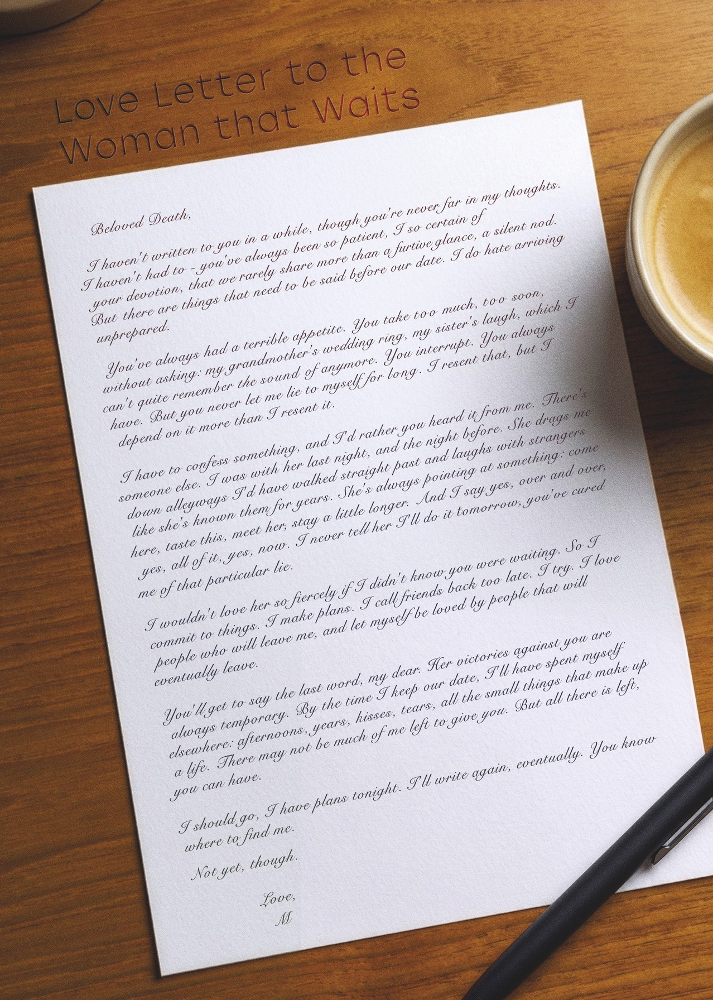

MOOWS / Issue 01 · August 2026
Love letter to the woman that waits
Beloved Death,
I haven't written to you in a while, though you're never far in my thoughts. I haven't had to - you've always been so patient, I so certain of your devotion, that we rarely share more than a furtive glance, a silent nod. But there are things that need to be said before our date. I do hate arriving unprepared.
You've always had a terrible appetite. You take too much, too soon, without asking: my grandmother's wedding ring, my sister's laugh, which I can't quite remember the sound of anymore. You interrupt. You always have. But you never let me lie to myself for long. I resent that, but I depend on it more than I resent it.
I have to confess something, and I'd rather you heard it from me. There's someone else. I was with her last night, and the night before. She drags me down alleyways I'd have walked straight past and talks to strangers like she's known them for years. She's always pointing at something: come here, taste this, meet her, stay a little longer. And I say yes, over and over, yes, all of it, now. I never tell her I'll do it tomorrow, you've cured me of that particular lie.
I wouldn't love her so fiercely if I didn't know you were waiting. So I commit to things. I make plans. I call friends back too late. I try. I love people who will leave me, and let myself be loved by people that will eventually leave.
You'll get to say the last word, my dear. Her victories against you are always temporary. By the time I keep our date, I'll have spent myself elsewhere: afternoons, years, kisses, tears, all the small things that make up a life. There may not be much of me left to give you. But all there is left, you can have.
I should go, I have plans tonight. I'll write again, eventually. You know where to find me.
Not yet, though.
Love,
M
Read this letter in its original handwritten form.
